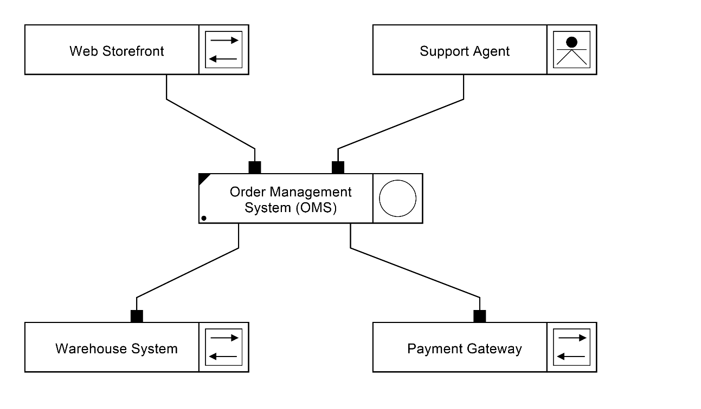
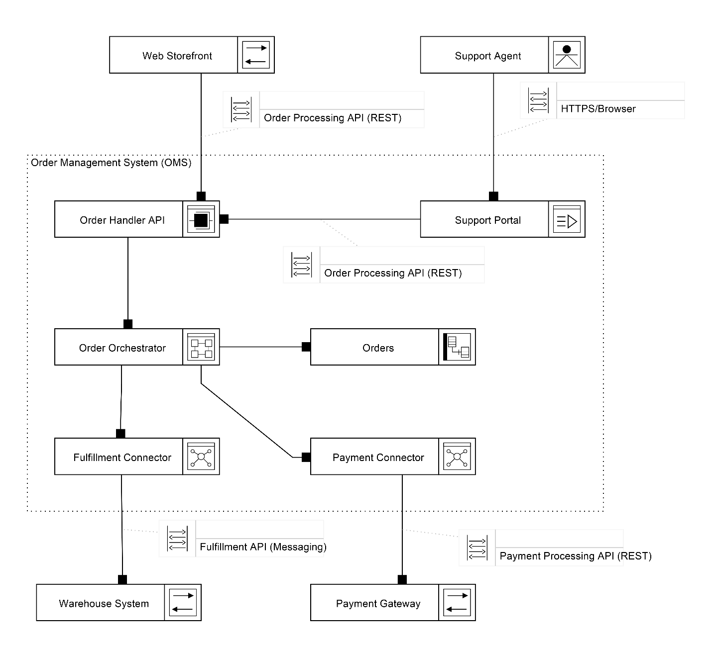
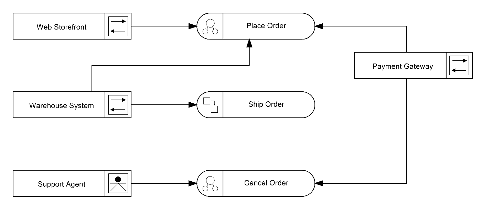

What exists?
Systems, Service Units, Datastores, Boundary Participants, and their relationships.
01 / 09 Start here ~10 min read
Software architecture that humans and AI can actually read.
Most architecture documentation fails in one of two ways: it is so vague that it cannot guide implementation, or so detailed that only the author can understand it.
SAIL gives software architecture a small, consistent visual language with explicit semantics, allowing a model to remain understandable as it moves from system context toward implementation.
Architecture has a new reader.
Coding agents can read source code, filenames, comments, tickets, and README files. But those artifacts primarily describe what exists. They do not necessarily tell an agent what the architecture intends.
Code tells us what exists.
Architecture tells us what is intended.
02 Orientation
SAIL — Software Architecture Iconographic Language — is a formal visual language for modeling software architecture at the system level.
SAIL describes boundaries, systems, components, integrations, behaviors, contracts, and architectural constraints.
It stops before classes, methods, algorithms, and internal implementation details.
03 The complete architecture
These are not four unrelated documents. They are different views of the same architecture model.
Operations, messages, schemas, protocols, and reusable contracts across boundaries.
Systems, Service Units, Datastores, Boundary Participants, and their relationships.
Interactions, scenarios, workflows, and processes.
Performance, reliability, security, constraints, risks, goals, and other architectural qualities.
04 Structural vocabulary
You do not need the full element catalog to start reading SAIL. These four shapes explain the essential structure.
A deployable or independently operating architectural boundary.
Something outside the system that interacts with it: a user, external system, device, or sensor.
The leaf-level unit of architectural responsibility. SAIL structural decomposition stops here; classes, methods, algorithms, and internal implementation belong below the SAIL architectural layer.
State, persistence, buffering, messaging, or storage.
Type vs. Kind
The outer shape tells you the Type — the architectural role the element plays. The glyph inside tells you the Kind — the specialization of that type.
05 Structural Context
The Structural Context Diagram is intentionally minimal. It orients the reader before any internal detail is revealed.
The architecture under consideration.
The people, devices, sensors, and external systems outside it.
Structural relationships between architectural elements.
06 Progressive disclosure
SAIL does not try to put the entire architecture on one diagram. Start with orientation. Reveal detail only when the reader needs it.


A System may contain smaller Systems. Those Systems can be decomposed again.
Eventually the architecture reaches Service Units: the leaf-level architectural responsibilities where SAIL stops and implementation begins.
This is SAIL's systems-of-systems model.07 Behavior + qualities
Structure tells us what exists.
Behavior tells us what the architecture actually does.
A behavior that does not require further architectural decomposition.
A larger behavior composed of smaller named interactions.
A behavior that requires a step-by-step Process Diagram.

Intrinsic Architecture
Architecture is not only what the system contains or what it does. It also defines the conditions under which the design is considered successful.
Confirmed fire events need an end-to-end response target.
The architecture includes an offline buffer strategy.
Scale is part of the architecture, not an afterthought.
Field devices operate under severe power constraints.
The NEDS Mainframe must not be flooded.
These are not incidental implementation details. They are architectural forces. SAIL captures those forces explicitly as Intrinsic Characteristics.
08 Machine-readable intent
Traditionally architecture documentation had three primary audiences. Now there is another reader.
Scope and outcomes
Boundaries, decisions, responsibilities, interfaces, and constraints
Enough clarity to build the intended system
Explicit architectural context
An AI coding agent can inspect source code and infer an architecture. But inference is not intent.
A machine-readable SAIL model can explicitly tell tools:
The diagrams are for people.
The model is for people and machines.
The goal is not to let AI make architecture decisions.
The goal is to stop AI from having to guess what architecture decisions have already been made.
09 The core idea
Structure describes what exists.
Behavior describes what happens.
Intrinsic characteristics describe what must be true.
Interfaces define the contracts.
SAIL starts at the system boundary and progressively reveals architectural detail until it reaches components builders can implement. The same architecture can be represented visually for people and structurally for machines.